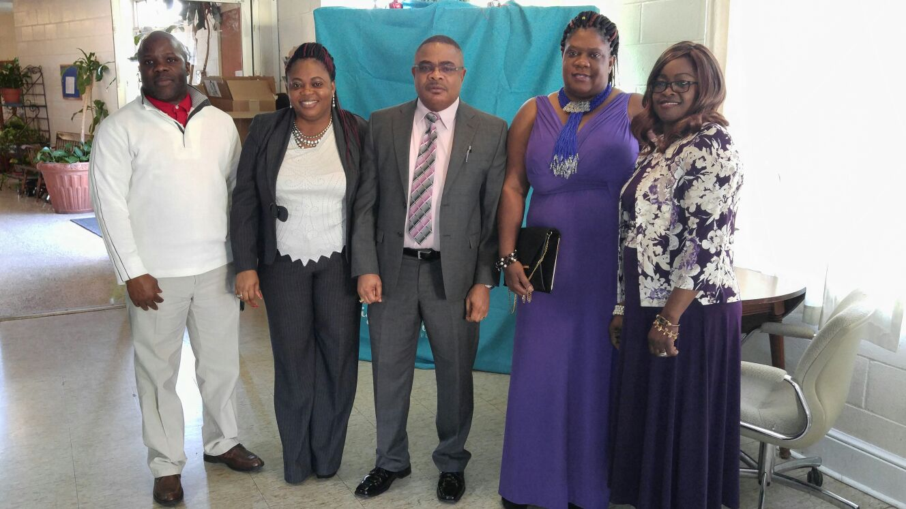
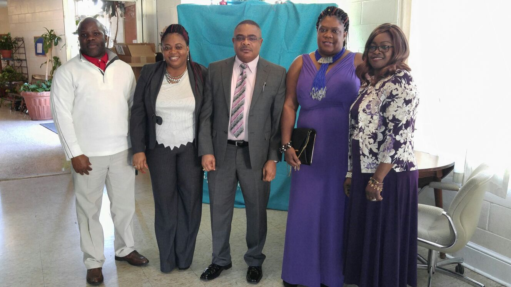

MOVEMENT FOR THE SURVIVAL OF THE OGONI PEOPLE (MOSOP)
WASHINGTON DC CHAPTER
A brief history of Ogoni
The Ogoni Kingdom (also known as the Ogonis) are one of the many indigenous peoples in the region of southeast Nigeria. They number about 1.5 million people and live in a 404-square-mile (1,050 km2) homeland which they also refer to as Ogoni, or Ogoniland.
The flight of the Ogoni people
The Ogoni people have been victims of human rights violations for many years. In 1956, four years before Nigerian Independence, Royal Dutch/Shell, in collaboration with the British government, found a commercially viable oil field on the Niger Delta and began oil production in 1958. In a 15-year period from 1976 to 1991 there were reportedly 2,976 oil spills of about 2.1 million barrels of oil in Ogoniland, accounting for about 40% of the total oil spills of the Royal Dutch/Shell company worldwide
In 1990, under the leadership of activist and environmentalist Ken Saro-Wiwa, the Movement of the Survival of the Ogoni People (MOSOP) planned to take action against the Federal Republic of Nigeria and the oil companies. In October 1990, MOSOP presented The Ogoni Bill of Rights to the government. The Bill hoped to gain political and economic autonomy for the Ogoni people, leaving them in control of the natural resources of Ogoniland protecting against further land degradation.[8] The movement lost steam in 1994 after Saro-Wiwa and several other MOSOP leaders were executed by the Nigerian government
In 1993, following protests that were designed to stop contractors from laying a new pipeline for Shell, the Mobile Police raided the area to quell the unrest. In the chaos that followed, it has been alleged that 27 villages were raided, resulting in the death of 2,000 Ogoni people and displacement of 80,000.
UNEP estimated that it could take up to 30 years to rehabilitate Ogoniland to its full potential and that the first five years of rehabilitation would require funding of about US$1 billion. In 2012, the Nigerian Minister of Petroleum Resources, Deizani Alison-Madueke, announced the establishment of the Hydrocarbon Pollution Restoration Project, which intends to follow the UNEP report suggestions of Ogoniland to prevent further degradation.
Our Hope
We believe with the recent visit of the president of Nigeria to Ogoni the UNEP report and recommendation will be implemented.

Our Values: Integrity and Transpancy, Freedom and Justice
Our Mission: Advocate for the betterment of Ogoni both the citizen and its environment. Strengthen welfare in America
Our Service: To Ogonis in Ogoniland, Ogonis in the United States and the entire human race.
Gallery
 
